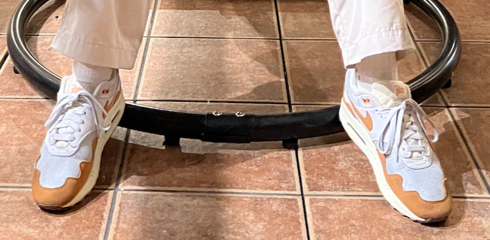
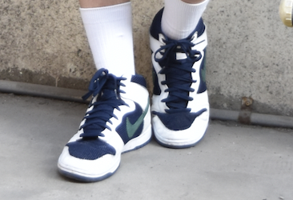

私の買って良かった”Sneakers” Best3
１位「NEIKE~Air max1×patta~ Monarch」

<良かった点>
- デザインが可愛くデニムの生地によくマッチする
- コラボ商品で高いけど比較的に手が出せる値段
- 被らないデザイン（同じのを履いてる人を１年経ってまだ見ていない）
< こんな人におすすめ♪ >
- 人と被らずかっこいいMy sneakersが欲しい人
- Air Max は身長が盛れるので身長を気にしている人
< 気になるお値段は・・・>
¥ 18,150（NIKE公式サイトより）
このSneakersについて詳しく知りたい方はこちらをクリック
２位「NIKE~DUNK HI EMB~ MIDNIGHT NAVY」

<良かった点>
- ハイカットタイプだからロングソックスが似合う
- ネイビーとホワイトだからストリート服装に合わせやすい
- ガッチリしているから歩いていても足がしんどくなりにくい
< こんな人におすすめ♪ >
- ストリートファッションに興味がある人
- ハイカットタイプのSenakersで少し普通とは違う感じを出したい方
< 気になるお値段は・・・>
¥ 15000~28000（公式にはないためオンラインストアの各サイトの大体の金額）
このSneakersについて詳しく知りたい方はこちらをクリック